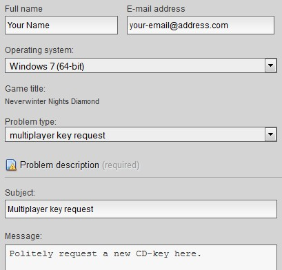

Getting Started
Checking the Forums
We strongly recommend that you go to our forums, linked above, and register as a user to review all relevant information regarding our server, mechanical changes and rules.
Getting Neverwinter Nights
To play in EFU you will require Neverwinter Nights and all of the expansions. If you do not own the game, you can purchase it fairly cheap from GOG.com. Their Diamond Edition is the version you want.
GOG Neverwinter Nights: Diamond Edition
Updating Neverwinter Nights
Now that you have your game, and installed it, you will need to update it to the latest patch — 1.69. This is best done through manual critical rebuild, which you can get from here:
Requesting Multiplayer CD-key
By default Neverwinter comes with a single player cd-key, a default one that allows the game to be installed. It will however cause problem as we have banned this default cd-key for security reasons.
You will be able to request a multiplayer key by following the next steps:
1. Go to the GOG support page — Remember that you must be logged in to do this.
2. Fill in the following or similar form, and request a multiplayer key politely and they should provide you with a fresh CD Key within a day’s time.

Connecting to EFU
As listed in our frontpage, you are able to connect to efu by starting the game, and going to multiplayer. Gamespy’s Neverwinter Server list is no longer active. You will therefore need to follow these steps:
1. Use the Direct Connect in the multiplayer server window
2. Connect to nwn.efupw.com:5121, no password required.
Downloads
We have released a downloader to swiftly get basic overrides and/or haks efu may use. To get it, use the link below and read the detailed info about it and some overrides we have.
Take notice: To enable your HAKs in-game, you must type /c haks on into the chat line, when you are in game.
Character Development
All kinds of Forgotten Realms character backgrounds and all standard classes and races can work in EFU. However, bear in mind that much has been changed from canon. The best characters for EFU are ones which are richly characterized, complex in their strengths and weaknesses, and are not built simply for the purposes of optimized mechanical power.
Your Character’s Story So Far
The beginning of the end was when the Red Star rose into the night sky, and magic stopped working in the way it once had. Waves of wild magic crackled across all of Faerun, inflicting a terrible price of destruction and still birth. Doom speakers spoke with greater certainty of the approaching end times. Magic had once been kept in check by the moderating influence of Mystra; but with Mystryl’s rebirth and a weave that refused to be controlled there was no predicting what might become possible.
Yet this catastrophe was nothing compared to the doom that came less than one year later.
Released by distant and obscure ritual, a sinuous shape of blackness rose from the south, arced across the sky and approached the sun. The Night Serpent Dendar, grown strong on its diet of nightmares, engulfed the Sun in its terrible maw and so was this ultimate life-giving source of light and warmth extinguished.
With the Darkening, the civilisations of Faerun were plunged into chaos. The Night Serpent continued its celestial rampage, devouring many Gods and smashing their realms. Violence, famine, murder, plague, and environmental collapse decimated populations. Deprived even of hope for divine rescue, the apocalyptic catastrophe that took place resulted in near complete devastation of the surface world.
It was then that the Illithid Empire struck. Waiting with cold patience, they had first succeeded at enthralling many races of the Underdark and fashioning them, along with legions of enslaved surfacers and other monstrous creatures, into a cyclopean host of twisted thralls capable of conquering all the Planes.
Illithid servants roam uncontested upon the barren wastes of the surface. Cities are being raised to the majesty of their masters. Grotesque intellects gaze at the stars, where their counterparts plot to consume other worlds and stranger races.
Most of your kind had long since perished, else taken by the mind flayer thralls, yet somehow you endured. Somehow you survived. Now you wander, alone in the wastes, searching.
Searching… searching for what?